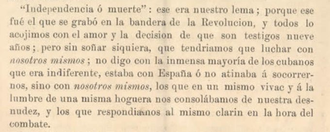
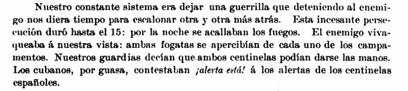
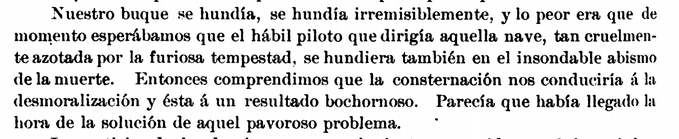

Los Hilos de Monik
De los zanjoneros y de qué pasó después de la Protesta de Baraguá
Publicado el 27 de marzo de 2021 - 26 tweets - Hilo original en Twitter
1
Hace algunos días, Granma usaba la Protesta de Baraguá como argumento de por qué no habría diálogo con "arribistas, plattistas, anexionistas, zanjoneros". Al parecer, alguien no ha leído mucho.
Hablemos hoy de los zanjoneros y de qué pasó después de la Protesta de Baraguá.
2
Ramón Roa, en su carta del 3 de agosto de 1878 a Juan M. Macías, habla de los tan vilipendiados zanjoneros:
"Sospechar cobardía en hombres que durante largos años, vencidos unas veces, vencedores otras, habían adquirido familiaridad con el peligro, parece fuera de razón...
3
... Bien podía enfriarse el entusiasmo, disminuirse la acometividad; pero el valor del sufrimiento, el valor del martirio, es común a todos los hombres dignos. Y no hay tampoco razón para creer que el sentimiento de la dignidad se hubiera menguado"
4
Recomiendo mucho la lectura de la carta (aquí la comparto: Carta de Roa), donde Roa hace un recuento detallado y de primera mano de cómo se negoció el Pacto del Zanjón y por qué.
Y les dejo este fragmento que me parece MUY apropiado para los tiempos que corren
5
La carta trasluce desprecio y rencor por Vicente García, Presidente de la República en Armas que negoció el Pacto de Zanjón con Martínez Campos.
Roa además, deja su opinión de por qué que era imposible continuar la guerra: por las indisciplinas y la pérdida de la esperanza.
6
Dice:
"¿Por qué fuimos traidores? ¿Acaso porque no vencimos, porque no fuimos gigantes fabulosos capaces de prodigios? ¿Acaso porque la Patria entera pesaba sobre unos pocos y no pudimos con su inmensa pesadumbre?"
Esas son las palabras de un zanjonero, pero también un cubano.
7
Una de las cosas que Roa explica en su carta es que el Pacto del Zanjón se negoció y firmó mayormente por los líderes del Centro del país. A Maceo le trataron de localizar, pero no pudieron encontrarle a tiempo.
Es por ello que Martínez Campos hubo de negociar aparte con él.
8
El 14 de marzo, Vicente García se unió a los mambises en Baraguá. ¿Por qué fue? ¿Por qué cambió de idea si semanas antes había negociado el Pacto del Zanjón?
La respuesta la da Fernando Figueredo en "La Revolución del Yara". Aquí, cita a Martínez Campos diciéndole a Maceo:
9
"García tenía delante dos compromisos: uno conmigo de terminar la lucha, otro con ustedes de seguirla; ha optado por el más honroso para él, la unión a sus compañeros. Y aunque contraríe un tanto mis proyectos, lo aplaudo"
Es decir, después de firmado el pacto, se retractó
10
Sobre la Protesta de Baraguá mucho se ha escrito, y aquí dejo el libro de Figueredo, cuya minuciosa descripción del evento es la que nos ha sido transmitida por generaciones: Libro "La Revolución de Yara"
Pero ... ¿qué pasó después de la Protesta?
11
Lo primero que hicieron los mambises fue redactar una nueva constitución, más acorde con la situación: fue la Constitución de Baraguá.
Establecía un gobierno provisional de 4 miembros, un General en Jefe, y que la paz solo se negociaría bajo las bases de la independencia.
12
El gobierno provisional quedó constituido por Fernando Figueredo (autor del libro "La Revolución de Yara"), Pablo Beola, Leonardo del Mármol y Manuel Calvar.
Este último fue proclamado Presidente, probablemente porque era el de mayor rango militar.
13
Vicente García fue designado General en Jefe, mandando sobre el distrito de Las Tunas y Holguín Occidental. Y Antonio Maceo quedó como Jefe de Oriente
Guillermón Moncada dirigiría la Brigada de Guantánamo, Flor Crombet de Santiago de Cuba, y Rius Rivera, de Holguín.
14
El 22 de marzo, Mtnez Campos pidió reunión con los representantes del nuevo gobierno. Ofreció un "verdadero banquete para aquellos que en 10 años no habían llevado a su boca ni pan ni vino". Al no poder convencerlos de capitular, los responsabilizó de las muertes del sgte día
15
Pero ... el 23 de marzo hubo varias escaramuzas, y Figueredo cuenta que los españoles no respondían a los disparos de los cubanos.
En su lugar, gritaban: "¡Viva la paz! ¡Viva Cuba! ¡No hagais fuego, somos hermanos!".
Esto desconcertó (y desmoralizó) a los mambises.
16
La estrategia de Mtnez Campos duró dos semanas.
Incluso con tropas que superaban a los insurrectos, los españoles enarbolaban banderas blancas y caían bajo el fuego cubano sin responder .
Algunos mambises comenzaron a pedirle a Maceo no participar en los ataques, o desertaron.
17
Martínez Campos ofreció al gobierno provisional el dar pasaportes a todos aquellos rebeldes que no pudieran continuar en la campaña por enfermedad. El 7 de abril, aceptaron y varios mambises enfermos salieron del país.
Y el 8 de abril la estrategia española pasó a la ofensiva.
18
CLa descripción que hace Figueredo de una batalla en el Cauto donde no solo el fuego, también los cocodrilos, causaron bajas, es impresionante. Y los cubanos combatían casi sin caballos.
Por una semana, los españoles persiguieron a las tropas cubanas. Aún así, hubo humor.
19
A finales de abril, José Maceo preguntó al Gobierno si aún se luchaba por la independencia, o por obtener más concesiones que las del Zanjón. El Gobierno respondió que por la independencia.
Mientras... continuaban recibiendo noticias de rendiciones y del regreso de exiliados.
20
Además, la táctica de Mtnez Campos era que a los cubanos hechos prisioneros, se les trataba con grandes consideraciones, se les cuidaba, y se les devolvían a sus familias con alimentos y medicinas.
Para mayo, los soldados cubanos ya huían de la batalla.
21
Solo quedaba una solución: buscar una salida digna para Maceo.
Para ello, se decidió que debía ir al extranjero a buscar refuerzos. El Gobierno se reunión con Martínez Campos para pedir que autorizara un pasaporte para Maceo. ¡Por supuesto que dijo que sí!.
22
El 9 de mayo, Antonio Maceo partía hacia Jamaica en el vapor de guerra español "Fernando el Católico".
Es decir ¡Mtnez Campos puso a su disposición de Maceo un navío para que saliera a buscar refuerzos!
Al final, era una gran dramatización para poner fin a la guerra.
23
Así se despidió Maceo de Mtnez Campos:
"Le doy las gracias por sus delicadas atenciones (...) y le deseo que pueda terminar su obra, ahora que yo no le estorbo, pero como no estoy comprometido, haré cuanto pueda para volver y entonces emprenderé de nuevo mi obra"
24
El 28 de mayo de 1878 las tropas de Maceo capitularon ante las españolas, 2 meses y 13 días después de la Protesta de Baraguá... y en el mismo lugar.
Entonces, ¿podría decirse que Maceo fue también un zanjonero? Al final, solo alargó lo inevitable, con el mismo resultado.
25
Si de alguien debemos hablar como realmente intransigente, es del Coronel villareño José Ramón Leocadio Bonachea, el único oficial mambí que se mantuvo en armas contra los españoles... ¡hasta 1879!
Solo se rindió cuando Calixto García se lo ordenó, y lo hizo bajo protesta.
26
Al final, la Protesta de Baraguá pasó a la historia como un hecho digno, y los zanjoneros como traidores. Pero ... ¿realmente fue así? A fin de cuentas, eran hombres cansados, hambrientos, desgastados. La Protesta solo ocasionó más muertos y el mismo resultado.
¿No creen?